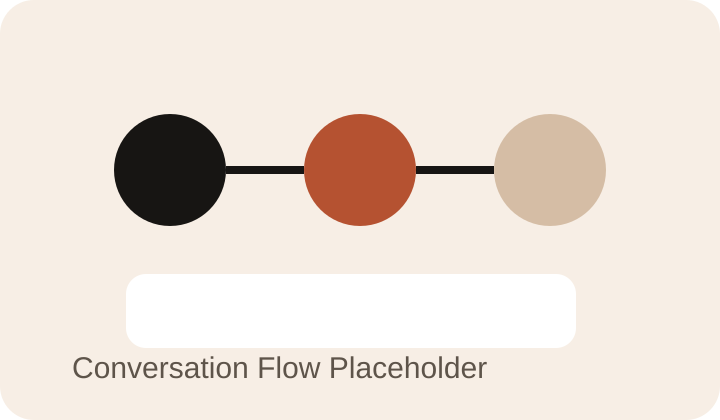

Branch 01
交互机制设计与页面表达
这个项目的第一层不是模型，而是“用户进来以后会怎么感受、怎么继续使用”。
- 设计小程序页面结构和核心内容节奏。
- 引入“情绪共振星图”与“认知重塑”互动机制。
- 让功能不只停留在问答，而是形成更完整的情绪陪伴体验。
Mini App / Product
这是一个围绕情绪陪伴、认知重塑和自然语言交互设计的微信小程序项目。 它不是只做技术接入，而是把交互机制、内容表达、模型能力和小程序体验一起组织成一个完整产品。

这个项目希望通过更温和、更持续的交互方式，为用户提供情绪表达与认知整理的空间，而不是机械式问答。 所以它既是一个技术项目，也是一个需要认真思考产品表达方式和用户体验路径的项目。
对我来说，星斗星盒能比较完整地代表我“既做实现，也做表达”的一面。
我独立负责微信小程序前后端开发，设计核心页面结构，并引入“情绪共振星图”与“认知重塑”互动机制。
同时我负责打通云服务器部署流程，对接大语言模型，构建情绪分析与自然语言响应体系，并把这一套逻辑真正落到可运行的小程序里。
Branch 01
这个项目的第一层不是模型，而是“用户进来以后会怎么感受、怎么继续使用”。
Branch 02
项目第二层是模型能力本身，但重点不是“接上就行”，而是让它真的服务于产品场景。
Branch 03
最后一层是把它真正变成一个可运行产品，而不是停在概念和界面稿。
后面你可以给这个项目补 UI 截图、对话演示、产品流程图，甚至直接放小程序录屏。

这个项目如果补视频，会比纯截图更容易让人感受到产品节奏和交互设计。